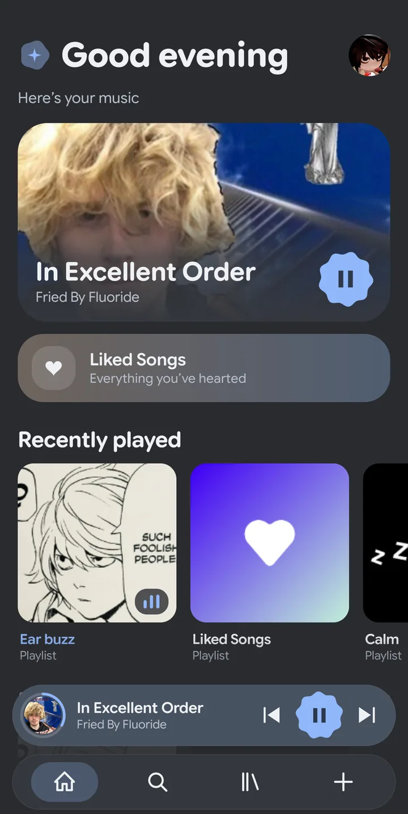
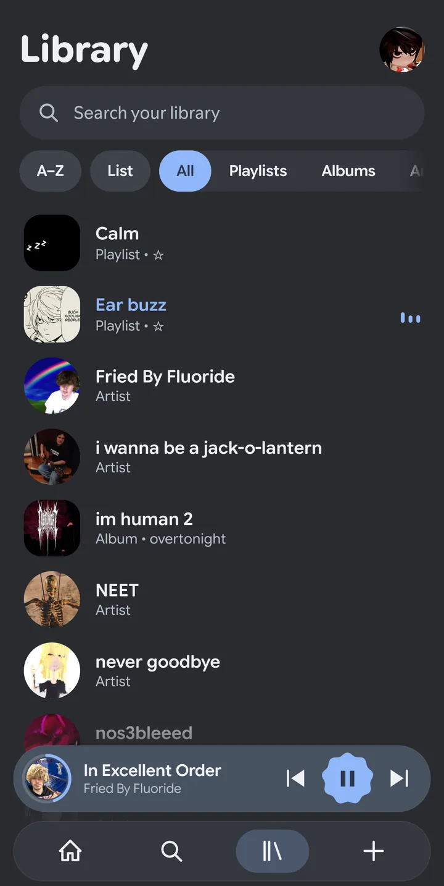
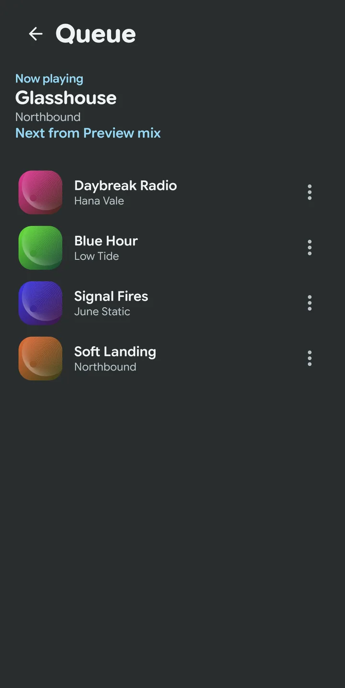
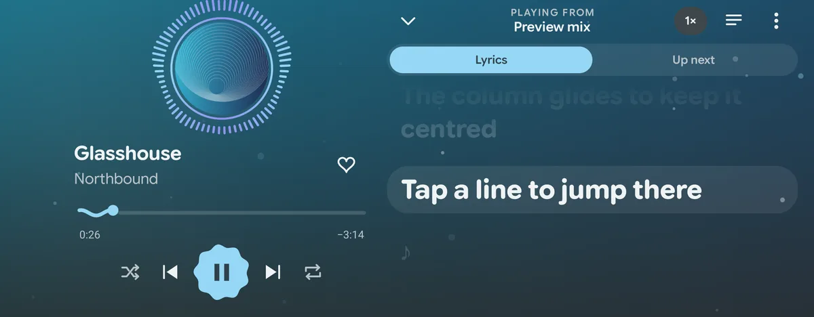
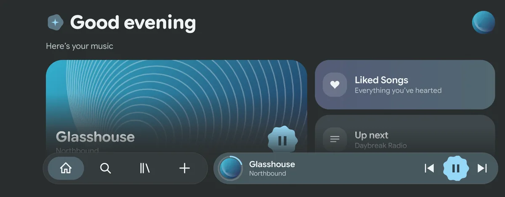
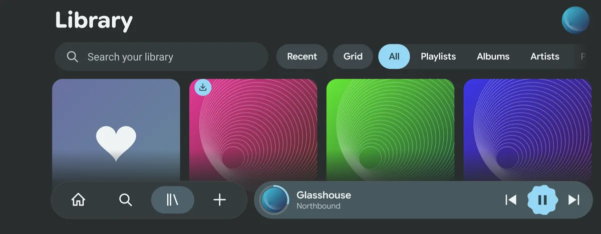
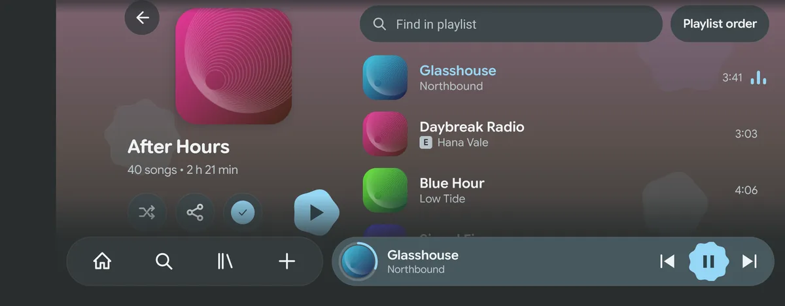

Lyrics that keep your place
Open lyrics from the player and the current line lights up as it’s sung. The column glides to keep it centred, lines you’ve passed fade back, and tapping any line jumps the song there.

Spatch patches the official Spotify app on Android so it opens to its own player, library and settings. Your account, playback and downloads stay Spotify’s.
For Spotify 9.2.0.2053 on 64-bit Android 10 or newer.





Spatch changes the screens, not the service. Spotify still signs you in, streams and downloads music, runs Connect and keeps your library. Ads and account limits work as they do in the regular app.
The player, lyrics, queue, looks and sound, as they appear on the phone.
Open lyrics from the player and the current line lights up as it’s sung. The column glides to keep it centred, lines you’ve passed fade back, and tapping any line jumps the song there.
The queue shows what’s playing and what comes next. The player menu has a sleep timer, Play on another device for Connect speakers, Share and the player’s own settings.
Your picture at the top of every page opens Profile, Queue, Downloads and Settings.


Turn on Allow rotation and the app follows your phone into landscape. The player puts lyrics and Up next beside the cover, and switches between them by itself.
The rest of the app uses the width too. The navigator and mini player share one row, Library becomes a grid, and playlists show their cover beside the songs.




Pick a palette, or let the app take its colours from each cover. Choose light, dark or the system setting, and an accent colour for songs without art.
The player’s visualizer can be bars, a ring, a contour or nothing. Spinning artwork, the bass pulse, the cover glow and the blurred backdrop each switch on and off on their own.
Try the app’s palettes on this page.


Drag a 10-band curve, start from a preset like Rock or Vocals, or load an AutoEq correction made for your headphone model. Bass boost, loudness compensation, reverb and a limiter sit on the same page.
Turn the curve off for a moment to hear the difference.

Spatch Manager does the work on your phone. You need Spotify 9.2.0.2053 and a 64-bit phone on Android 10 or newer.
Download spatch-manager.apk from the releases page and install it.
If Spotify 9.2.0.2053 is installed unmodified, the Manager uses it. Otherwise, choose the matching Spotify APKM.
The Manager patches Spotify, signs it with a key made on your phone and installs it. Nothing is uploaded.
Its Changes page lists what’s new in each nightly. Turn on Tell me about new patches and it checks twice a day, then updates Spatch in place with the same key, so your login and downloads stay.
Clones installs a second Spotify with its own name, icon, login and downloads, so you can keep the regular app as well.


Android only installs an update signed with the same key. Use Export key in the Manager and keep the file somewhere safe: without it, updating means uninstalling first, which removes your downloads.
Short guides to installing, tuning and troubleshooting Spatch on your phone.
Spatch Manager patches Spotify on your phone, signs it with a key made there and installs it. You need a 64-bit phone on Android 10 or newer and Spotify 9.2.0.2053.
spatch-manager.apk from the Spatch Manager releases page.Turn on Tell me about new patches in the Manager to check twice a day; tapping the notification opens straight into the update. Leave Nightly patches off to follow tagged releases, or turn it on to get each new nightly build as changes land. Updates replace only base.apk with the same key, so your login and downloads stay. On Android 12 and newer they install without a confirmation screen once the Manager has installed Spotify. Update manager appears when a newer Manager build is ready.
Fresh installs use Spotify’s own sign-in screen. Once signed in, Spatch loads your library and account from Spotify’s core; the first load needs a live connection rather than an old cache. Premium is what Spatch is built and tested with — free accounts currently have trouble loading and playing music.
Android only installs an update when the new APK is signed with the same key as the one already on your phone. The Manager creates a key on your device the first time you install Spatch.
Use Export key in the Manager to save a password-protected .p12 backup somewhere safe. If you switch phones or reinstall the Manager, use Import key to bring it back before updating.
If the key is lost, Android refuses to install updates over Spatch. You have to uninstall first and install fresh, which removes your offline downloads and local app data.
Import key also reads a .p12 keystore made with keytool for the desktop patcher, so the Manager can update a desktop-patched install in place. If Android can’t read a newer keytool file (AES encryption), re-export it with legacy encryption first, then delete the temporary key.pem file:
openssl pkcs12 -in your.p12 -nodes -out key.pem
openssl pkcs12 -export -legacy -in key.pem -out spatch-key.p12An invite is a private link (an index.json address with a personal name and code after #) that lets Install Spatch download the exact Spotify APKM it needs automatically, so you don’t have to pick the file yourself.
To add one, paste the link under Spotify → Add an invite in Spatch Manager, or share the link straight to Spatch Manager from a chat app. The invite stays in the Manager’s private, non-backed-up storage. A saved APKM or unmodified installed Spotify still comes first if you already have one.
When downloading, the Manager sends your login only to the invite’s own host over HTTPS, selects only the entry whose version code and SHA-256 match the patch bundle, checks your phone’s Android version and ABI, and writes to a temporary file until both length and hash check out. Credentials are never forwarded if a redirect leaves the invite’s host.
Spatch never ships Spotify’s own files. If you want to run a private source for friends using spatch source, see the private source guide on GitHub.
A clone installs a second Spatch beside the regular Spotify app (or another Spatch install), under its own package name such as com.spotify.music.two. Its package, content providers and app-owned permissions are renamed in every split, so it sits cleanly next to official Spotify.
Tap your avatar at the top right of any screen to open Settings. Controls are grouped into seven pages.
Turn on Sound processing in Settings → Equalizer & sound to shape audio playing on your phone. Every stage lives on this page.
When a phone doesn’t support Android’s DynamicsProcessing effect (or refuses to open it), Spatch falls back to the phone’s built-in hardware equalizer and reports device bands (fallback) in Compatibility and Diagnostics. Basic tone shaping still works, while high-band AutoEq precision, the limiter and channel balance need DynamicsProcessing.
Tap the lyrics button in the player for full-screen synced lyrics, where tapping any line jumps the song there. You can also show one to three lines under the cover via Settings → Appearance → Lyrics in the player.
lrclib.net when Spotify has no lyrics or only whole-line timing, adding word-by-word highlighting when available.− and + timing buttons in the lyrics header to shift them in 0.5-second steps for that track.Add the Spatch home-screen widget from your launcher’s widget picker for artwork and playback controls, or add the Spatch tile in Android’s Quick Settings shade for one-tap play and pause. Both remember the last-played track when Spatch is closed and wake playback in the background.
Automation apps (Tasker, MacroDroid, Automate, KWGT, Termux or ADB) can send a Broadcast intent to package com.spotify.music (or your clone’s package, shown in Settings → Developer → Automation & intents) and component <package>/spatch.SpatchWidget. Always include the package or component name so Android 8+ delivers the broadcast. If Spatch is closed, playback wakes in the background without opening the main UI.
| Action | What it does | Extras |
|---|---|---|
spatch.action.PLAY | Resume playback (or last played at saved position) | — |
spatch.action.PAUSE | Pause playback | — |
spatch.action.TOGGLE | Toggle play / pause | — |
spatch.action.NEXT | Skip to next track | — |
spatch.action.PREVIOUS | Skip to previous track | — |
spatch.action.SEEK | Seek within the current track | position_ms (or position) in ms |
spatch.action.PLAY_URI | Play a Spotify URI | uri, optional context, shuffle, position_ms |
spatch.action.SHUFFLE | Set shuffle state | enabled / shuffle (bool) or mode (0/1) |
spatch.action.REPEAT | Set repeat mode | mode (0 off, 1 all, 2 one) |
spatch.action.QUEUE | Add a track to the queue | uri |
# Resume last played in the background
adb shell am broadcast -a spatch.action.PLAY -n com.spotify.music/spatch.SpatchWidget
# Play a specific track at 30 seconds
adb shell am broadcast -a spatch.action.PLAY_URI -n com.spotify.music/spatch.SpatchWidget \
--es uri "spotify:track:4cOdK2wGLETKBW3PvgPWqT" \
--el position_ms 30000
# Seek to 1:00
adb shell am broadcast -a spatch.action.SEEK -n com.spotify.music/spatch.SpatchWidget \
--el position_ms 60000Official playback fallback lets you browse and control music in Spatch (typically installed as a clone) while the installed, official Spotify app plays the audio. Enable it under Settings → Playback → Playback backend → Official Spotify fallback, and keep official Spotify installed and signed into the same account.
Spatch mirrors playback state and controls using Android’s notification access permission, restricted to com.spotify.music only (it never reads or logs notification text). On newer Android builds, if the switch is greyed out as a restricted setting, tap it once, then open your clone’s App info → ⋮ → Allow restricted settings and return to enable access. Auto-return after handoff (on by default) brings Spatch back to the front once Spotify starts playing.
Normal Spotify ads and free-account limits still apply. Built-in EQ, clone downloads, Connect transfers and some queue or shuffle controls remain in the official app while fallback is active. You can switch back to Built-in player at any time.
ExperimentalApp Remote: for in-app playback control without switching over to official Spotify, Playback backend also includes optional App Remote settings (Client ID, Redirect URI, package & SHA-1 copy and Connect App Remote).
Common snags and where to look first.
.p12 key in Spatch Manager, uninstall the existing app first (this clears downloads), or install Spatch as a Second Spotify clone.Building locally needs Rust (2024 edition), a JDK, apktool, Android SDK platform 35+ with build tools, the matching Spotify APKM, and the ARM64 Rust library build (via cargo-ndk) for signed patches and bundles.
cargo build --release
./target/release/spatch inspect input.apkm
./target/release/spatch patch input.apkm --out out-dir --dry-run
./target/release/spatch bundle input.apkm --out spatch-bundle.zipFull build steps, checks and source layout live in the Spatch repository on GitHub and docs/development.md.
What people ask before they install.
Premium is what Spatch is built and tested with. Free accounts currently have trouble loading and playing music in Spatch.
Yes. The Manager can install Spatch as a second Spotify with its own name, icon, login and downloads, next to the one you already have.
No. The Manager patches Spotify and signs it on your phone, with a key it makes there. It only downloads the patch from GitHub.
Turn on Tell me about new patches and the Manager checks twice a day. Updates install over the top with the same key, so your login and downloads stay. On Android 12 and newer they install without a confirmation screen.
Android only accepts an update signed with the same key. Without it, you’d have to uninstall Spatch to update, which removes its downloads. Use Export key in the Manager and keep the file somewhere safe.
Spotify 9.2.0.2053. If that version is installed unmodified, the Manager uses it. If not, give the Manager the matching APKM file once and it keeps it for updates.
No. Spatch is an independent, open-source project under the MIT License. It changes how the Spotify app looks on your phone and nothing else.
What’s being worked on, then every change to Spatch, newest first.
Each change builds a new nightly, which the Manager installs when Nightly patches is on.
Loading changes from GitHub…